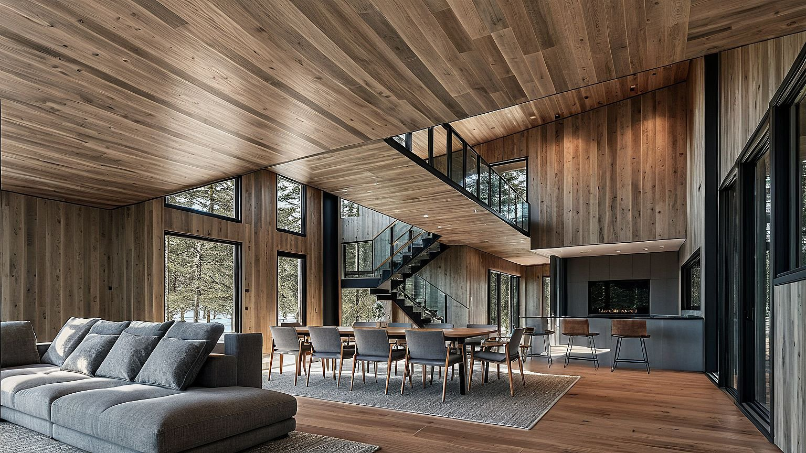
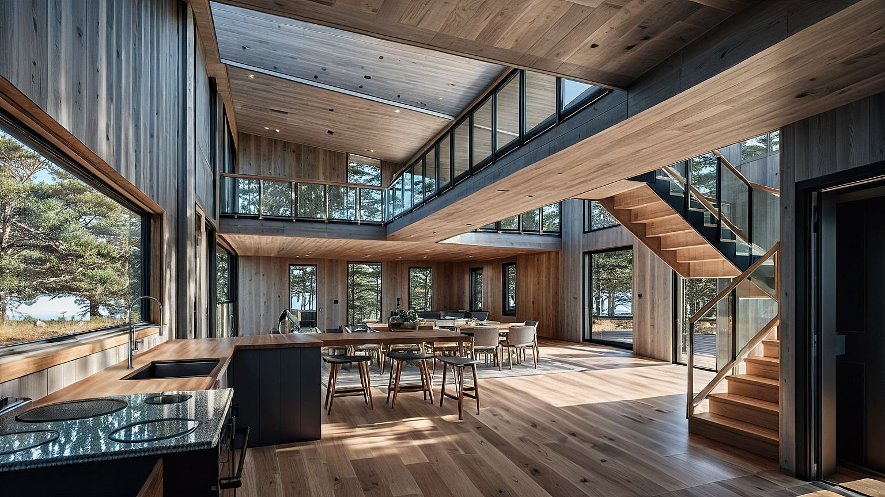

Project Details
A home that belongs to the woods.
Hidden House is a woodland residence on Martha's Vineyard, designed to sit within — rather than against — its forested setting. The design responds to the existing tree canopy, topography, and filtered light of the site.
The project is currently in progress. Further details to follow.


